Contents | Features | Reviews | News | Archives | Store

Contents | Features | Reviews | News | Archives | Store
 |
23rd Toronto
International |
Nobody ever leaves a film festival having seen exactly what they planned to see; time and location conflicts, social events, and the occasional technical snafu (mercifully few and far between in Toronto, thanks to a crack staff) all contribute to a constantly changing schedule. Here, in alphabetical order, are notes from the films in one critic's Toronto diary. Please note that where applicable, each film's English title is followed by the original language title and the section of the festival in which the film was presented.
Am I Beautiful? (Bin ich schön?) (Special Presentation)
A dazzling display of virtuoso multilevel storytelling (with one of the better Dolby digital mixes in recent memory), this new film from Doris Dörrie -- a low-key mainstay of German cinema since her audacious 1983 debut Straight From the Heart and director of the popular 185 art-house hit Men... -- will inevitably be compared to Robert Altman's Short Cuts for its audacious and demanding storytelling style. Outside of Seville, Spain and in Munich, Germany, more than a dozen seemingly unconnected characters meet, conflict and drift apart again. As the film progresses, the relationships slowly become more apparent, and each character comes to a graceful, if rocky, epiphany. When she isn't filming she's writing fiction, and Dörrie brings to this film all the leisurely complexity of a good novel; even when it strays you know you're in the hands of a compassionate and focused storyteller. Am I Beautiful? is precisely the kind of movie that should be fought over by distributors hungry for quality acquisitions; let's hope that's happening as you read this.
Angel on My Shoulder (Real to Reel)
If you think of actress Gwen Welles at all, the memory probably involves the astonishingly vulnerable scene in Robert Altman's Nashville (1975) where Welles, as naive young singer Sueleen Gay, is coerced into an impromptu striptease in a room full of howling men. This exasperating yet remarkable documentary, shot on video by the actress' very close friend, director Donna Deitch (who cast Welles in her 1985 lesbian-themed drama Desert Hearts), is an intimate portrait of the fast-living Welles' slow and agonizing death from cancer in the early part of this decade. Among the close and unquestioningly supportive circle of friends glimpsed during the film are Nashville screenwriter Joan Tewkesbury (who tells the story of Welles' casting in one of the pivotal American movies of the 1970s) and character actor Harris Yulin (Night Moves, Multiplicity), who is never identified. While valuable as an unflinching look at one woman's poignant journey, Angel on My Shoulder is also a warning of sorts: Welles' decision to bypass conventional treatments prolonged her agony, and this ultimately tragic course of action infuses the film with a profound sadness that serves as a perhaps unintentional metaphor for her short life and the indulgent, capricious times in which she lived.
Apt Pupil (Special Presentation)
 Adapted
from Stephen King's novella by first-time screenwriter Brandon Boyce, director Bryan
Singer's follow-up to his acclaimed 1995 thriller The Usual Suspects features a
bravura performance by Ian McKellen as Kurt Dussander, a Nazi war criminal discovered
living in a suburban neighborhood by inquisitive high school student Todd Bowden (Brad
Renfro. One observation over and above a review of the film: after a steady diet of
foreign and independent fare, Hollywood studio fare buffed to the high gloss of Apt
Pupil can be genuinely disconcerting, a feeling of dislocation heightened by the work
of composer/editor John Ottman, the singular double-threat talent who contributed much of
the creepy aura to The Usual Suspects. [Click here to
read the full review]
Adapted
from Stephen King's novella by first-time screenwriter Brandon Boyce, director Bryan
Singer's follow-up to his acclaimed 1995 thriller The Usual Suspects features a
bravura performance by Ian McKellen as Kurt Dussander, a Nazi war criminal discovered
living in a suburban neighborhood by inquisitive high school student Todd Bowden (Brad
Renfro. One observation over and above a review of the film: after a steady diet of
foreign and independent fare, Hollywood studio fare buffed to the high gloss of Apt
Pupil can be genuinely disconcerting, a feeling of dislocation heightened by the work
of composer/editor John Ottman, the singular double-threat talent who contributed much of
the creepy aura to The Usual Suspects. [Click here to
read the full review]
Aprile (Masters)
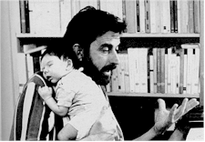Italian filmmaker Nanni Moretti's movies are as much tracts as they are films, heady mixtures of fact and fiction which chart the artist's ongoing political and social apprehensions while at the same time exploring in some detail the personal and professional aspects of his life. Following his internationally acclaimed Dear Diary (1994), Moretti here keys the action around the birth of his son and the rise to power of Italy's first left-wing government -- both of which happened in the month of April. Inspired to delay the 1950s style musical he's preparing (the subject? The adventures of a Trotskyite pastry chef) in favor of a documentary on the elections, unrepentent Communist Moretti's apprehensions grow as both events loom. Perhaps not as emotionally accessible as Dear Diary, Aprile loses its momentum in the middle sections (even though the film is only 78 minutes long) and the thicket of domestic politics is all but impenetrable (sometimes even to Moretti). Still, in the spirit of Sally Potter's recent The Tango Lesson and everything Woody Allen ever made, Aprile is nothing if not original, with the inevitable polarization of audiences along the lines of who can stand the filmmaker's self-aggrandizing and who can't.
Beautiful Sunday (New Beat of Japan)
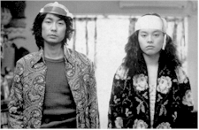It's always a special treat to see more than one film from a young director in a short space of time (vets still speak of the Berlin festival more than a decade ago when no less than three of Taiwanese director Hou Hsiao-hsien's first films could be viewed if one stepped lively). The first of two films from Japanese director Tetsuya Nakashima to be discussed here (see Happy-Go-Lucky, below), Beautiful Sunday is actually his second feature, a precise, deliberate and elaborate metaphor for the dislocation of modern city life in which the idiosyncratic denizens of an urban apartment block interact in a series of mundane rituals (noise complaints and the like) made all the more otherworldly by the formal and strangely stylized approach of former commercial director Nakashima. Masatoshi Nagase (Jim Jarmusch's Mystery Train, Fridrik Thor Fridriksson's Cold Fever) is the most prominent member of the odd ensemble as one half of a married couple in trouble who loses his job writing for the "Liquidman" TV show -- but that is just one of many plot strands that wind through this distinctive, mischievous, deadpan and challenging work.
Buttoners (Knoflikari) (Contemporary World Cinema)
 Nabbed
for the Toronto roster after its international premiere at the Rotterdam festival earlier
this year (where it won director Petr Zelenka one of three first-time helmer Tiger Awards,
alongside Stefan Ruzowitzky's The Inheritors [see below] and Jesse Peretz' First
Love, Last Rites) and a couple of subsequently jammed screenings in the market section
of the Berlin festival, Buttoners is a black comedy that owes equal amounts to the
vibrant Czech New Wave of the 1960s and the sense of cultural dislocation currently
bubbling just under the surface in central and eastern Europe. In the first of six
episodes, "Kokura Lucky," four Japanese curse the poor weather -- in English --
as overhead, the pilot of the Enola Gay changes course to drop the atomic bomb over
Hiroshima instead. Fast forward to exactly 50 years later, where a group of characters
interact through sheer chance in bizarrely funny and seemingly unconnected ways,
culminating in two young girls summoning the ghost of the Enola Gay's pilot to their
seance (he promptly calls into an all-night talk radio program). Zelenka's previous work
includes Mnaga Happy End, a fake documentary a la This is Spinal Tap, and Buttoners
(the title comes from a dubious cultural ritual involving the plucking of said upholstery
decorations with one's, uh, posterior) continues his fondness for mixing the real and
imagined in an appealingly absurdist stew of laughs, sex and social commentary.
Nabbed
for the Toronto roster after its international premiere at the Rotterdam festival earlier
this year (where it won director Petr Zelenka one of three first-time helmer Tiger Awards,
alongside Stefan Ruzowitzky's The Inheritors [see below] and Jesse Peretz' First
Love, Last Rites) and a couple of subsequently jammed screenings in the market section
of the Berlin festival, Buttoners is a black comedy that owes equal amounts to the
vibrant Czech New Wave of the 1960s and the sense of cultural dislocation currently
bubbling just under the surface in central and eastern Europe. In the first of six
episodes, "Kokura Lucky," four Japanese curse the poor weather -- in English --
as overhead, the pilot of the Enola Gay changes course to drop the atomic bomb over
Hiroshima instead. Fast forward to exactly 50 years later, where a group of characters
interact through sheer chance in bizarrely funny and seemingly unconnected ways,
culminating in two young girls summoning the ghost of the Enola Gay's pilot to their
seance (he promptly calls into an all-night talk radio program). Zelenka's previous work
includes Mnaga Happy End, a fake documentary a la This is Spinal Tap, and Buttoners
(the title comes from a dubious cultural ritual involving the plucking of said upholstery
decorations with one's, uh, posterior) continues his fondness for mixing the real and
imagined in an appealingly absurdist stew of laughs, sex and social commentary.
Cardiogram (Kardiogramma) (Spotlight: Darezhan Omirbaev)
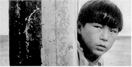Although he's only made three features and two shorts (with nothing in his oeuvre exceeding 80 minutes), Kazakh-born and Moscow-trained Darezhan Omirbaev has already gained an international reputation for his rigorous, nearly Bressonian approach to human dilemmas at once culture-specific and universal. In his 1995 film Cardiogram, young Zhasulan (Zhasulan Asauov), possessed of a weak heart, is brought by his worried mother from the distant steppes to a sanitarium for sick children. At first lost in the mean-spirited pecking order of the place -- it doesn't help that he can't speak Russian, the predominant language of the clinic -- the boy soon discovers a hidden well of craftiness within himself and manages to survive the spare isolation (ironically, the beauty of the surroundings seem lost on him). It is only when he develops a severe crush on a kindly nurse and discovers her ongoing relationship with a doctor that he feels the need to escape the hostile and oppressive hospital. Working from his own astute script, Omirbaev manages to be both formal and compassionate, as his plucky young protagonist grows independent without really understanding the value of his strength -- or the price he's paid for it.
Dog Park (Gala)
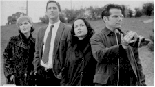The clearly partisan crowd at the press screening of this witty and urbane comedy probably would've laughed even if the film hadn't been witty and urbane. That's because Dog Park is the directorial debut of Bruce McCulloch, one of the members of cherished Canadian comedy troupe Kids in the Hall (oh, it was shot in Toronto, too). Another one of those movies that seems jarringly glib in the midst of a festival line-up, it's an initially fast-paced comedy that posits those places where people take their animals to do their business as the singles bars of the very late millenium. Recently jilted Andy (Luke Wilson, from Bottle Rocket) falls for TV kids show host Lorna (Natasha Henstridge), rooted on by perfect couple Jeri (Janeane Garofalo, who seemed to be in every other film at the festival) and Jeff (director/writer McCulloch, who selflessly gives everyone else most of the good lines). Dog Park comes out of the gate fast but fades in the stretch, as Wilson's aw-shucks sincerity grows quickly tiresome (he'd be right at home on any given episode of "Love, American Style" or "The Love Boat") and few of the characters grow beyond a second dimension. Former Kid Mark McKinney is a welcome hoot as quirky canine therapist Dr. Cavan. Dog Park was picked up for distribution and is more diverting than most similar fare, but in the end it's still only about two thirds of a complete success.
Gangland (Contemporary World Cinema)
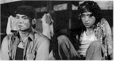For those who might wonder how in the world every film at a festival as large as Toronto can be worthy of a berth there, consider Gangland. Without a doubt one of the most wretched movies in recent memory, this blood-soaked underworld kiddie saga about four friends on school vacation who are reluctantly drawn into a brutal war over some dope they've inherited from a now-dead pal is the latest, uh, film from genre-hopping Filipino directors Peque Gallaga and Lore Reyes. Shot largely by a trio of videographers in a shaky, stylized blur (with jarring bits of inevitably luscious 35mm thrown in apparently to taunt an agonized audience), the movie tries to score points by showing the seductive lure of power egged on by a bloodthirsty media (as well as the dismal family lives that inevitably lead to violence) but succeeds only as an unrepentently exploitative mess. Lest the midnight movie crowd latch on to these words as a backhanded recommendation, some guy in the next seat fell asleep about halfway through the film and was still sawing logs as the lights came up. Lucky bastard.
The General (Masters)
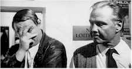John Boorman is one of the great living directors, and The General is a stunning return to form for the veteran British filmmaker. Based on the true story of a flamboyant thug who got on the bad side of the IRA, Brendan Gleeson (I Went Down, Sweety Barrett) gives a rousingly earthy and quirky performance as Martin Cahill, a volatile, headstrong, working-class thief who rises to power as a crime lord in early 1990s London on the strength of his fearlessness and eccentricities. Boorman's seen success (Point Blank, Deliverance, Hope and Glory), failure (Exorcist II: The Heretic, Where the Heart Is) and more than his share of critical injustice (the little-seen Leo the Last, the grossly misunderstood and under-appreciated Beyond Rangoon), but this new work comes like a bolt from the blue, mixing the stunning wide-screen black and white photography of Seamus Deasy with a wiseguy milieu to produce a movie that feels for all the world like a heady blend of the Dave Clarke Five romp Catch Us If You Can (Boorman's 1965 feature debut), The Krays and Goodfellas. Somehow, the music of Richie Buckley and Van Morrison is perfect, particularly in an exhilarating sequence that finds Cahill looting a house while the owners sleep -- and Morrison croons "this must be what paradise is like." Any work by John Boorman is a pleasure, but The General is indeed a return to paradise. [Click here to read the full review]
Happy-Go-Lucky (New Beat of Japan)
"I hate kids," begins director Tetsuya Nakashima's for this shrewd and funny first film about five schoolchildren and their struggles to master a particularly tricky move on the play equipment behind their school over one long, hot summer -- but don't let that fool you: in many ways more accessible than Nakashima's subsequent feature Beautiful Sunday (see above), Happy-Go-Lucky mixes the sweet and absurd in equal measure to paint a vivid portrait of the angst and uncertainty inherent in childhood, as well as feelings of shame that are at the heart of Japanese society. Fourth grader Takashi (Yoshitomo Hidaka) is one of five "horizontal bar losers" who must help each other learn the basic yet tricky move on the order of their teacher. While doing this, he is haunted by memories of his family: the father, who shuts himself up in a karaoke motel room with a high school girl; the sister, who poses nude for a magazine; the mother, who suffers under the weight of it all. Possessed of the same exquisite blocking and timing seen in Beautiful Sunday, Happy-Go-Lucky also nails that blissful naiveté of childhood, where everything -- no matter how odd or stressful -- is incorporated into a sunny, perpetually inquisitive worldview. "Why on earth did I make a children's movie?" Nakashima asks by way of concluding his remarks, and the answer is obvious: to show us adults a thing or two about endurance and acceptance.
Hell's Kitchen N.Y.C. (Discovery)
While not quite as distasteful as Gangland, this directing and writing debut from Tony Cinciripini (who assisted Lee Strasberg at the Actors' Studio and worked as a production designer and art director) is cut from the same sensationalist cloth. After his release from prison for a murder he didn't commit, Johnny (Mekhi Phifer) is confronted by the dead boy's sister Gloria (Angelina Jolie). Meanwhile, having witnessed the killing and fingered Johnny for it, Patty (Johnny Whitworth) is asked by Gloria to kill Johnny, but instead falls into a drug-addled stupor with Gloria's mother Liz (Rosanna Arquette). Oddly, for someone trained at the Actors' Studio Cinciripini has no sense of delicacy with any of his talent, and as a result the movie is less performed than bellowed (although it looks good). The one note of modulation is provided by William Forsythe as Lou, the ex-boxer for whom Johnny works at the 37th Street horse stables. Critics don't usually admit this, but when a fire alarm went off about halfway through this ordeal and sent the audience spilling into the lobby, at least one patron felt as if someone had taken a pillow off his head; gulping air, he felt glad to be alive and free from the suffocating effects of Hell's Kitchen N.Y.C.
I.D. (Pièces d'identités) (Planet Africa)
One of the true discoveries of the festival, this sparkling new film from writer-director Mweze Ngangura (who co-helmed La vie est belle with Benoît Lamy in 1987) is a delightfully complicated but impeccably logical comedy about heritage, identity and self-discovery. In the Zairean quarter of Brussels, the arrival of Mani Kongo, King of the Bakongo (Gerard Essomba) in search of the daughter he left behind as a child has a ripple effect that reaches to colonial-administrator-turned cop Schengen (Herbert Flack), itinerant taxi driver Chaka-Jo (Jean-Louis Daulne, who also wrote much of the film's music), peacockish pimp Viva-Wa-Viva (Muanza Goutier) and, of course, his daughter Mwana-Mwata (Dominique Mesa). "Having a good story is good but telling it well is better," Mgangura told a journalist earlier this year; seven years in the making, this sweet-natured romp exhibits both traits but also manages the not inconsiderable task of raising serious points about class struggles while simultaneously provoking gentle chuckles of recognition. Along with Am I Beautiful? (see above), I.D. has the most exciting potential in the American art-house market for an adventurous, confident, committed distributor.
The Inheritors (Die Siebtelbauern) (Contemporary World Cinema)
 Currently debuting stateside in the New York Film Festival, this distinctive
sophomore effort from writer-director Stefan Ruzowitzky was known as "The One-Seventh
Farmers" (the literal translation of the German title) when it won a Tiger Award at
the Rotterdam festival in February (see Buttoners, above). Making spectacular use
of a young, theater-trained cast, Ruzowitzky's tale -- "an Alpine western," he's
called it -- revolves around seven servants who inherit a farm when the much-loathed
master is murdered. Visually arresting and harrowingly acted, the film combines the feel
of the 1960s Young German Cinema movement with the melodramatic flourishes of Rainer
Werner Fassbinder and the wry humor of Woody Allen (two of the director's acknowledged
influences). As the uneducated, terrified collective stands up to the machinations of the
surrounding gentry, each internalizes the stress of freedom in his or her own way,
resulting in a tragic ending that reaffirms their defiance while at the same time decrying
the oppression and prejudice to which they've been subjected. A startlingly mature an
memorable piece of work, The Inheritors has found a distributor and should play
urban arthouses soon; watch for it.
Currently debuting stateside in the New York Film Festival, this distinctive
sophomore effort from writer-director Stefan Ruzowitzky was known as "The One-Seventh
Farmers" (the literal translation of the German title) when it won a Tiger Award at
the Rotterdam festival in February (see Buttoners, above). Making spectacular use
of a young, theater-trained cast, Ruzowitzky's tale -- "an Alpine western," he's
called it -- revolves around seven servants who inherit a farm when the much-loathed
master is murdered. Visually arresting and harrowingly acted, the film combines the feel
of the 1960s Young German Cinema movement with the melodramatic flourishes of Rainer
Werner Fassbinder and the wry humor of Woody Allen (two of the director's acknowledged
influences). As the uneducated, terrified collective stands up to the machinations of the
surrounding gentry, each internalizes the stress of freedom in his or her own way,
resulting in a tragic ending that reaffirms their defiance while at the same time decrying
the oppression and prejudice to which they've been subjected. A startlingly mature an
memorable piece of work, The Inheritors has found a distributor and should play
urban arthouses soon; watch for it.
Little Tropikana (Kleines Tropikana/Tropicanita) (Contemporary World Cinema)
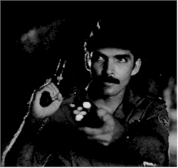A vigorously over-the-top and thus exhausting experience, Little Tropikana is an exuberant genre exercise that might best be summed up as Hammett goes to Havana: investigating both the mysterious murder of a German tourist and the bizarre graverobbing of a beloved historical site, Hemingway wannabe Lorenzo Columbié (Vladimir Cruz, the straight Communist from Strawberry and Chocolate) is a cop on a mission, as he spends most of the film trying to persuade his skeptical boss Amancio (Enrique Molina) that the two seemingly unrelated events are actually part of a huge conspiracy. He gets plenty of help from the last Cubans to see Herman the German alive at a raucous party, as each gives flamboyantly divergent accounts of the Teuton's activities that at one point or another include Nazi spies, the Rumba, suspicious midgets, telekenisis, and a top-secret formula. Director and co-scenarist Daniel Díaz Torres goes for baroque and gets there fast, pointing out that "to be an accomplice to this film you don't have to be crazy, but it helps...". At 112 minutes, Little Tropikana (the name comes from the club where much of the skullduggery took place) may drive audiences around the bend, but it'll be a merry journey for those up to the trip.
Little Thieves, Big Thieves (Cien años de perdon) (Contemporary World Cinema)
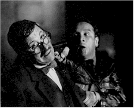The original Spanish title of this uneven but nevertheless affecting Venezuelan spin on Dog Day Afternoon is a distillation of the popular proverb "He who robs a thief deserves a hundred years of forgiveness," referring to an actual bank crisis there that is the backdrop of this caper film in which four regular, frustrated guys decide to rob a bank that's part of a larger scheme of government corruption. Unfortunately, once they arrive at the institution they discover that the nefarious bank president has already looted it under cover of a sanctioned intervention, leaving them to fend for themselves against a sensationalist press, gung-ho police official and a handful of hostages. Director Alejandro Saderman came to prominence five or six years ago with an arresting, politically charged drama called Knocks at My Door, and his latest film is again a skillful blend of actual events and appealing fiction. Yet just when things get going here, composer Julio d'Escrivan scores what should be tense action scenes with chipper dance music, thus short-circuiting whatever tension the sequence may have had. Worse yet, either by accident or design the bank interiors are very poorly lit, forcing those actors not fortunate enough to be standing near the windows to perform in deep shadow. Still, Saderman's made an involving political thriller that builds on its self-referential tribute to the Al Pacino classic to include a healthy and educational dose of social criticism.
Long Time Since (Discovery)
Sometimes a movie doesn't quite work because of slapdash presentation on one or more levels, and sometimes a movie doesn't work because of deliberate, conscious choices made by the filmmaker. Long Time Since is an intermittently intriguing but ultimately frustrating example of the latter, a movie so willfully bent on illustrating what director Jay Anania describes as "the cool light of Dreyer, Bresson, the composure of Bach, plainsong, and the intense passion of Noh" that it ends up being more of a visual thesis than an actual film. Haunted by a mysterious roadside occurrence on New Year's Eve almost a quarter century ago, icy botanical illustrator Diane Thwaite (Paulina Porizkova) is drawn out of her 24-year funk when she hears "Auld Lang Syne" on the radio and, with prompting from sketching, research, hypnosis and the mysterious Michael James (Julian Sands), begins to remember the awful circumstances of that long-ago blackout. Despite a deliberate visual scheme in which the Super 16 camera original was transferred to HDTV and then to a 35mm negative, the movie ultimately drowns in its own good intentions. Long Time Since is a movie that most audiences will probably want to like far more than they ultimately do.
The Patriot (Policarpo Quaresma -- Heroi do Brasil) (Contemporary World Cinema)
 There
are some notable new films coming from Brazil, but The Patriot isn't one of them.
Crudely made and woefully overlong at 123 minutes, the film tells the picaresque story of
Policarpo Quaresma (Paulo José), a relentlessy upbeat politician who, during the course
of the film, advocates the national adoption of the indigenous language Tupi-Guarani;
mobilizes the inmates of the asylum to which he's been committed after a dustup with an
important military leader; distributes rural land to the needy; enlists the inmates to
thwart a government overthrow; and falls in love with his young, married goddaughter.
Veteran director Paulo Thiago is quite obviously going for a jaunty treatment of serious
subjects; unfortunately, the wild modulations in tone subvert both goals, creating an
atmosphere of tedium in the theater. The acting is wild and undisciplined, the production
values are surprisingly shoddy (in one early sequence a blood pack can be clearly seen
under the shirt of someone who's just been "shot"), and the pacing never
overcomes Thiago's ambitions. Perhaps The Patriot would work better on television.
There
are some notable new films coming from Brazil, but The Patriot isn't one of them.
Crudely made and woefully overlong at 123 minutes, the film tells the picaresque story of
Policarpo Quaresma (Paulo José), a relentlessy upbeat politician who, during the course
of the film, advocates the national adoption of the indigenous language Tupi-Guarani;
mobilizes the inmates of the asylum to which he's been committed after a dustup with an
important military leader; distributes rural land to the needy; enlists the inmates to
thwart a government overthrow; and falls in love with his young, married goddaughter.
Veteran director Paulo Thiago is quite obviously going for a jaunty treatment of serious
subjects; unfortunately, the wild modulations in tone subvert both goals, creating an
atmosphere of tedium in the theater. The acting is wild and undisciplined, the production
values are surprisingly shoddy (in one early sequence a blood pack can be clearly seen
under the shirt of someone who's just been "shot"), and the pacing never
overcomes Thiago's ambitions. Perhaps The Patriot would work better on television.
Pecker (Special Presentation)
 Although
each of his films has a strong streak of sentimentality, "sweet" is not a word
usually linked with Baltimore-based filmmaker John Waters, creator of such notoriously --
and inspirationally -- trashy movies as Hairspray, Polyester and the
immortal, unclassifiable Pink Flamingos. Yet that's exactly what Pecker is:
a sweet, slight and altogether surprisingly graceful ode to family values, community pride
and irredeemable eccentricity. Edward Furlong is sublime as the title character -- the
nickname refers to the finicky way he eats (which of course we never see) -- an amateur
photographer who is discovered by vivacious but shallow New York agent Rorey Wheeler (Lili
Taylor). After initially succumbing to the evil lure of New York City, Pecker comes to
realize that you can take the boy out of Baltimore but you can't take Baltimore out of the
boy. Nurturing him throughout his travails are a gallery of appealing eccentrics that
include a miscast but game Christina Ricci as his laundromat-managing girlfriend Shelly,
Brendan Sexton III as his shoplifting pal Matt, Lauren Hulsey as Little Chrissy, Jean
Schertler as his odd but lovable grandmother, Mary Kay Place as his sunny mother, and a
whole slew of distinctive locals. After years of such skewed nostalgia as Cry-Baby
and unfocused comedy as Serial Mom, Waters has regained the distinctive equilibrium
of his early work and seems newly able to weave social satire into engaging narrative
situations. To be fair, the days of promoting a movie like Pink Flamingos with
showmanly pizzazz and little fear of censure are long gone, but you've got to hand it to a
guy who positions his directing title card over a shot of rats mating. [Click here to read the full review]
Although
each of his films has a strong streak of sentimentality, "sweet" is not a word
usually linked with Baltimore-based filmmaker John Waters, creator of such notoriously --
and inspirationally -- trashy movies as Hairspray, Polyester and the
immortal, unclassifiable Pink Flamingos. Yet that's exactly what Pecker is:
a sweet, slight and altogether surprisingly graceful ode to family values, community pride
and irredeemable eccentricity. Edward Furlong is sublime as the title character -- the
nickname refers to the finicky way he eats (which of course we never see) -- an amateur
photographer who is discovered by vivacious but shallow New York agent Rorey Wheeler (Lili
Taylor). After initially succumbing to the evil lure of New York City, Pecker comes to
realize that you can take the boy out of Baltimore but you can't take Baltimore out of the
boy. Nurturing him throughout his travails are a gallery of appealing eccentrics that
include a miscast but game Christina Ricci as his laundromat-managing girlfriend Shelly,
Brendan Sexton III as his shoplifting pal Matt, Lauren Hulsey as Little Chrissy, Jean
Schertler as his odd but lovable grandmother, Mary Kay Place as his sunny mother, and a
whole slew of distinctive locals. After years of such skewed nostalgia as Cry-Baby
and unfocused comedy as Serial Mom, Waters has regained the distinctive equilibrium
of his early work and seems newly able to weave social satire into engaging narrative
situations. To be fair, the days of promoting a movie like Pink Flamingos with
showmanly pizzazz and little fear of censure are long gone, but you've got to hand it to a
guy who positions his directing title card over a shot of rats mating. [Click here to read the full review]
The Pianist (El Pianista) (Discovery)
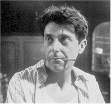First-time director Mario Gas brings extensive experience in theater and opera to The Pianist, which Gustavo Hernández adapted from the novel by Manuel Vázquez Montalbán. Unfortunately, that experience can't overcome the profound structural flaw in the movie's narrative -- carried over from the book -- so while The Pianist is very good at evoking a transgenerational show business milieu, the film as a whole is as dramatically murky as it is emotionally satisfying. When two musicians are inadvertently reunited in the mid-1980s, their very different fortunes are explained in a series of flashbacks that reveal their temperaments, choices, loves and losses. The bookending sequences are the best, with veteran actors Laurent Terzieff as flamboyant composer Lluis Doria and Serge Reggiani as the old friend he discovers playing piano in a seedy transvestite club. After a reel or so the film takes a fatal turn, as instead of flashing back to their heady days in 1930s Paris (where they're played by Jordi Molla and Pere Ponce, respectively), there's a rambling interlude in mid-1940s Barcelona that introduces a strong political element to the story that virtually demands at least a basic knowledge of Spanish history. Thus disrupted, the movie's remaining pleasures are to be found in the snatches of music by Mompau, Mozart, Albeniz, Chopin and others (as well as the fine, urgent original score by Carlos Santos) and the convincing way the actors portray musicians. There may be a fine movie somewhere in The Pianist, but as constructed it is a frustrated tangle of ambitions and miscalculations.
The Powder Keg (Bure Baruta) (Masters)
 As earthy and exciting a film as Toronto had on offer, this funny, profane,
violent and exhilarating new movie from veteran Yugoslav director Goran Paskaljevic (The
Beach Guard in Winter, Someone Else's America) is the dark side of Am I
Beautiful? (see above), a harrowing, Short Cuts-inspired adaptation of a stage
play about 24 hours in the underbelly of urban Belgrade (Paskaljevic's home town) on the
eve of the Dayton Peace Accord in 1995. The narrative is a combustible chain reaction of
humanity, as strangers and friends alike ricochet off each other in an extended ballet of
anger, pain, frustration, and misunderstanding that begins with a minor traffic
altercation and escalates to murder. A mousy-looking citizen erupts when a careless
teenager involves him in a fender bender; a 17-year-old Bosnian Serb refugee rebels
against his honest parents and becomes enmeshed in a shady drug scheme; two burly boxers
square off in their gym's shower, with tragic results; an agitated teenager hijacks a bus
for a brief midnight joyride; a returning immigrant tries to woo back a former lover. Each
of these people interact briefly with the others (either as friends or strangers),
heightening the feeling that everyone in that troubled country is separated by fewer than
six degrees from everyone else. Although it sounds dark and often is, Paskaljevic's point
seems to be that buried beneath the the fear and confusion are honest, good-hearted people
trying to cope with uncertainty until better times roll around. A politically charged epic
that never overtly mentions politics, The Powder Keg is urgent, relevant cinema of
the highest order.
As earthy and exciting a film as Toronto had on offer, this funny, profane,
violent and exhilarating new movie from veteran Yugoslav director Goran Paskaljevic (The
Beach Guard in Winter, Someone Else's America) is the dark side of Am I
Beautiful? (see above), a harrowing, Short Cuts-inspired adaptation of a stage
play about 24 hours in the underbelly of urban Belgrade (Paskaljevic's home town) on the
eve of the Dayton Peace Accord in 1995. The narrative is a combustible chain reaction of
humanity, as strangers and friends alike ricochet off each other in an extended ballet of
anger, pain, frustration, and misunderstanding that begins with a minor traffic
altercation and escalates to murder. A mousy-looking citizen erupts when a careless
teenager involves him in a fender bender; a 17-year-old Bosnian Serb refugee rebels
against his honest parents and becomes enmeshed in a shady drug scheme; two burly boxers
square off in their gym's shower, with tragic results; an agitated teenager hijacks a bus
for a brief midnight joyride; a returning immigrant tries to woo back a former lover. Each
of these people interact briefly with the others (either as friends or strangers),
heightening the feeling that everyone in that troubled country is separated by fewer than
six degrees from everyone else. Although it sounds dark and often is, Paskaljevic's point
seems to be that buried beneath the the fear and confusion are honest, good-hearted people
trying to cope with uncertainty until better times roll around. A politically charged epic
that never overtly mentions politics, The Powder Keg is urgent, relevant cinema of
the highest order.
Radiance (Discovery)
On the windswept Queensland coast, three estranged Aboriginal sisters -- offspring of different fathers -- have gathered at their childhood home for their mother's funeral. The eldest, regal opera singer Cressy (Rachael Maza), flies in to join pregnant party girl Nona (Deborah Mailman) and bitter caregiver Mae (Trisha Morton-Thomas) for a healing process -- fuelled by alcohol, sorrow and resentment -- in which dreams are dashed, fragile bonds are forged and split apart, harmful myths are dispelled and hard truths are learned. Adapted by Louis Nowra from his 1993 play and directed with forcefulness and not a little air of Tennessee Williams-ish gothicness by debut helmer Rachel Perkins (daughter of prominent Aboriginal activist Charles Perkins), Radiance -- only the second feature, after Tracy Moffatt's Bedevil (1993) to be directed by an Aboriginal woman -- benefits greatly from an extended rehearsal period that marinates the melodrama and racial issues in a ferocious veracity. While cliches abound in Radiance, they still pack a strong, if familiar, wallop.
The Terrorist (Discovery)
Rather than the promise of thrills and action inherent in the title, this debut film by prominent Indian cinematographer Santosh Sivan is a provocative and distinctive character study of 19-year-old career terrorist Melli (gorgeous newcomer Ayesha Dharka) and the preparations leading up to her suicide bombing of a prominent politician. Inspired in part by the awful assassination of former Prime Minister Rajiv Gandhi, the film keeps the political posturing purposefully vague, focusing on the spiritual and physical journey of Melli as she waits for the details of her assignment at the rural farm of genial landowner Vasuderan, who has been nicknamed "Mad Vasu" for his steady litany of anecdotes and morality tales. The camera is clearly smitten with Dharka, and as a result Sivan has shot a large percentage of the film in haunting close-ups (this may also be a function of the film's obviously spare budget). As hypnotic as the young actress' face are the numerous textures of this largely rural story, with location filming in actual rainstorms resulting in lots of water: beading on faces, running off of structures. Disarmingly slight as it unfolds, The Terrorist runs deep in the memory, calling up images of fragile beauty as well as issues of commitment, the value of life and the toll imposed by acts of politically motivated violence.
Touch of Evil (Special Presentation)
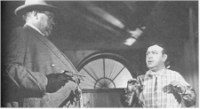Like almost everything else he directed, Orson Welles had his Expressionistic 1958 B-movie Touch of Evil -- the last film he would make in America -- taken away from him by producers appalled with the results and intolerant of the filmmaker's passionate but frankly self-serving antics, and it is only with the guidance of a previously unknown 58-page memo from the director to the studio and the commitment of film scholar Jonathan Rosenbaum and Oscar-winning editor Walter Murch (The English Patient) that the film is now available in a version that more closely resembles what Welles may or may not have gotten around to delivering. Ostensibly the sordid tale of corrupt bordertown police captain Hank Quinlan (Welles) and the straight-arrow Mexican cop Vargas (Charlton Heston) who brings him down -- nearly at the expense of his new bride Susan (Janet Leigh) -- the movie became, in Welles' hands, a baroque tale of corruption, greed and vice as well as a gleeful affirmation of film and its flamboyant possibilities. The importance of this restoration cannot be overstated, as the legendary uninterrupted opening shot has been stripped of the titles and Henry Mancini's memorable but blaring overture (his fine music remains throughout the rest of the picture), and the sound has been cleaned up and enriched throughout. Probably the most important and striking changes come in the early reels, as the individual adventures of Vargas and Susan after the fatal bomb blast that opens the movie are intertwined, thus giving the two plot threads equal importance and suspense. Readers who haven't seen this seminal work are advised to watch the pre-existing cut of the film on tape and then seek out the restoration (currently playing in very limited release around the country). If the new cut can't be found, begin planning now: this Touch of Evil is going to make one hell of a DVD.
Water Easy Reach (En dag til i solen) (Contemporary World Cinema)
Norwegian director Bent Hamer, who came to prominence three years ago with the idiosyncratic and noteworthy Eggs, has followed up that award winner with an ambitious but largely unsatisfying second feature -- shot predominantly in English -- about a young Norwegian sailor stuck in a Spanish port town in the northeastern province of Galatia and his adventures there while waiting for his grandfather's watch to be repaired. Among the people he meets and befriends are motormouthed Australian swabbie Windy (Nicholas Hope, from "Bad Boy Bubby" and "Henry Fool"), robust lighthouse keeper Molina (Spanish icon Francisco "Paco" Rabal), and the sweet-natured Marta (Ingrid Rubio, one of the stars of Carlos Saura's Taxi). As cryptic and freshly offbeat as Eggs, the movie in the end has nothing to offer beyond surface quirkiness, and is far too inscrutable in the telling to offer much more than an extended guessing game for hardy audiences. Self-conscious and forced, Water Easy Reach (the Norwegian title translates as "One More Day in the Sun" but the English moniker is never explained) is a sincere chore, but a chore nonetheless.
Windhorse (Discovery)
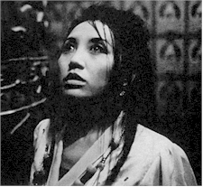Think of this magnificent, highly-charged political drama from Charlottesville, Virginia-based filmmaker Paul Wagner (winner of the short documentary Oscar for his 1984 production The Stone Carvers) as a sequel to Seven Years in Tibet and Kundun. Set in contemporary Tibet, the film follows the fortunes of surly anti-Chinese layabout Dorjee (Jampa Kelsang), his sister Dolkar (Dadon), an aspiring pop singer at the "Art of the Masses" gallery/nightclub, and their cousin Tenzin Pema, a nun (as with many of the cast and crew, her name is withheld). As Dolkar is processed by the Chinese star-making machinery, Pema is thrown in prison for a spontaneous public protest. When the nun is released into the care of the siblings' family, it means trouble for Dolkar -- especially when Pema is videotaped by Dorjee's Tibetan-speaking American friend Amy (Taije Silverman). Shot on high-definition video in Kathmandu and the Himalayan Mountains, with a week of clandestine shooting in Chinese-occupied Tibet, Windhorse -- a name referring to scraps of paper inscribed with prayers thrown into the sky -- is a multi-layered story of courage in the face of despair that puts an urgent, contemporary human face on an issue too often abstract in the eyes of the world. The subject of much acclaim and more than a few awards at festivals around the world, Windhorse has just been picked up by Shadow Distribution and will be playing markets throughout the United States over the next six months to a year.
Contents | Features | Reviews | News | Archives | Store
Copyright © 1999 by Nitrate Productions, Inc. All Rights Reserved.